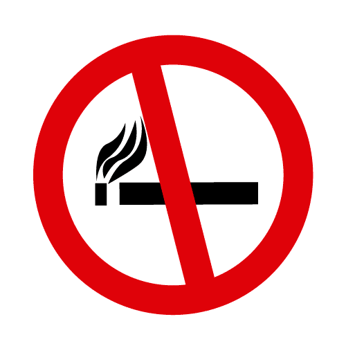

- Comidas ligeras y poco abundantes, varias veces al día, con alimentos de fácil masticación.
- Evite alimentos de masticación prolongada, que causen flatulencia y/o digestiones pesadas. Evite la ingesta excesiva de hidratos de carbono, así como las bebidas gaseosas.
- La mejor bebida es el agua, recomendable 1,5L diario.
SEXUALIDAD
- Puede usar la medicación de rescate.
- Posiciones que no dificulten la respiración.
- Pare si el ahogo es importante.
- No ingerir comidas abundantes antes.
TABACO
 Lo más beneficioso para usted es dejar el tabaco.
VACUNACIÓN
Recuerde vacunarse todos los años de la gripe y consulte sobre la vacuna del neumococo.